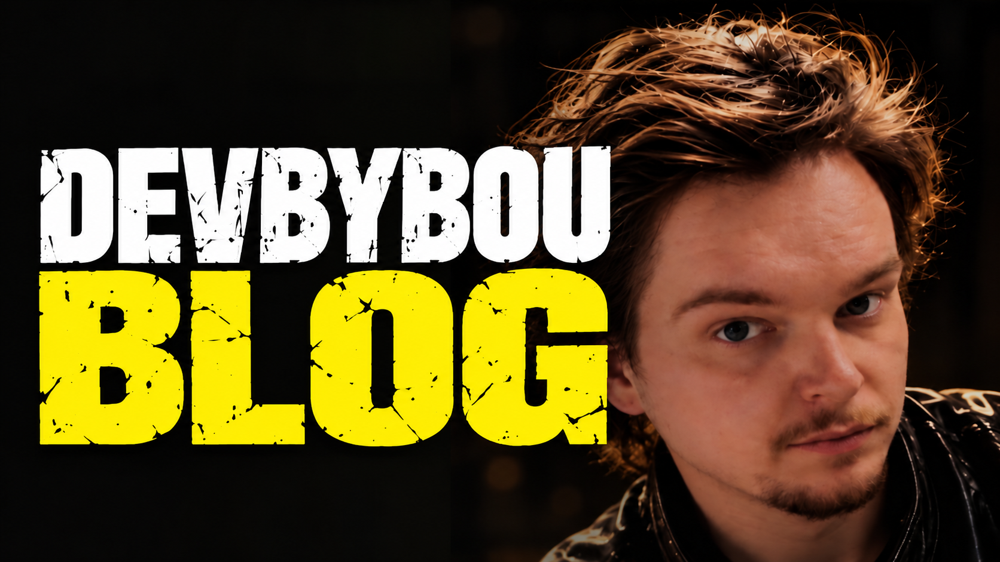

DEVBYBOU Blog

Poznámky o internetu, technologiích, lidech kolem nich a věcech, které by jinak možná zůstaly jen bokem. O tom, jak se internet měnil, co po cestě zanechal a proč není jen technologií, ale i kulturou, historií a spoustou podivností kolem.